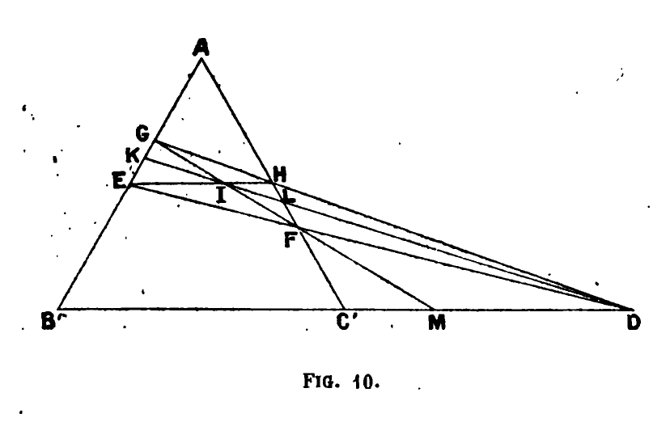

Five Guiding Principles & Simultaneous 1/10 and 1/15 Division¶
Émile Lemoine — La Géométrographie (English Translation, pp. 36–39, fols. 0052–0055)
We said above that the art of geometric constructions, or Geometrography, rested upon principles of the most extreme simplicity; the digression concerning the constructions of Messrs. Chasles and Mannheim caused us to defer the statement of these principles; here they are:
1° In each construction, trace no useless line—that is to say, employ, when one can, either the traced lines of the given figure or those already traced in the course of the construction.
COROLLARY: trace, whenever possible, all circles of a given compass opening once their centers are placed, even though the drawing of these circles only appears later in the logical development of the solution; one must therefore, as we have already said, make a preliminary study of the question by a kind of reasoned sketch of the construction.
f. 0053 · p. 372° Choose among the solutions of the same problem those whose total system of constructions leads to the simplest symbol.
3° Examine, in every problem, all particular cases of data that may arise and then simplify the general symbol for those particular cases.
This discussion in somewhat complex problems, such as, for example, the problem of Apollonius (circles tangent to three given circles), is very delicate, and it is the best exercise in sagacity and discussion that one can propose to students.
4° In searching for the GENERAL symbol of a construction, employ only general constructions, unless one proves that a particular solution always applies to the problem under examination.
Thus, for example, if in a general construction one has to draw polars of points with respect to circles, one must adopt for the general symbol of drawing these polars either a or b of construction XXXIX, and not c, which is simpler, but applies only when the distance from the pole to the center is greater than half the radius; unless, quite evidently, one proves that this circumstance always occurs in the general problem one is studying.
5° For a construction carried out with particular data, take advantage of all particular constructions simpler than the general constructions that can apply in the case where one stands.
There is evidently a general study of procedures to be made in order to arrive at simple constructions; nothing has yet been done from this point of view; we shall merely give an example here to make our thought clearly understood.
Let us examine the two problems: To take a straight line \(n\) times greater or a straight line \(n\) times smaller than a given straight line BC; \(n\) being supposed an integer.
Constructions XXX and XXXI are rather complicated and above all give rise to a great probability of error when \(n\) is somewhat considerable; there is reason therefore to seek whether one cannot find another mode of constructions deriving from the properties of certain figures or from the values of the number \(n\) and yielding a better practical result.
Suppose, for example, that we have to draw a straight line that is \(\frac{1}{10}\) of BC and, at the same time, a straight line that is \(\frac{1}{15}\) of BC. By construction XXXI I construct \(B_1 C_1\) which is \(\frac{1}{5}\) of BC \(\mathrm{op.} : (2R_1 + 2R_2 + 11C_1 + 13C_3)\), and to have \(\frac{1}{15}\) of BC, I have only to divide \(B_1 C_1\) at point N between \(B_1\) and \(C_1\)
f. 0054 · p. 38so that \(\frac{N'C_1}{B_1 N} = \frac{1}{2}\); \(N'C_1\) will be \(\frac{BC}{15}\). I can, in order to divide \(B_1 C_1\) in the ratio of 1 to 2, employ the following procedure, simpler than the general procedure given for dividing a given straight line in a given ratio. Through \(B_1\) I draw any straight line \(B_1 A'\) and on \(B_1 A'\) I mark any point M by taking \(B_1 M' = M'A'\) \(\mathrm{op.} : (R_1 + R_2 + C_1 + C_2 + C_3)\); I take the symmetric A of A with respect to \(C_1\) and draw \(A'' M'\) cutting \(B_1 C_1\) at N \(\mathrm{op.} : (4R_1 + 3R_2 + 2C_1 + C_3)\).
In all: \(\mathrm{op.} : (5R_1 + 3R_2 + 3C_1 + C_2 + 2C_3)\) to divide \(B_1 C_1\) at N in the ratio of 2 to 1. I shall thus have obtained \(\frac{1}{10}\) and \(\frac{1}{15}\) of BC by the symbol:


OTHER METHOD. — I take BC between the legs of the compass and, A being any point, I trace ABC (fig. 10); then from any point C of ABC, I trace CBC cutting ABC at B, and I trace BC cutting CBC at D, then AC, AB, \(\mathrm{op.} : (6R_1 + 3R_2 + 2C_1 + C_2 + 2C_3)\).
I place the midpoint H of AC and the midpoint E of AB \(\mathrm{op.} : (2R_1 + R_2 + 2C_1 + C_3)\) by using circles ABC, CBC to obtain H, and describing AAH to obtain E; I draw ED cutting AC at F; HD cutting B at G; ED, GF meeting at I; DI cutting AB at K, AC at L \(\mathrm{op.} : (10R_1 + 5R_2)\); we have \(KG = \frac{1}{15}\,BC\), \(KE = \frac{1}{10}\,BC\).
In all:
Let M be the point where GF cuts BC.
It is evident that this figure yields many other divisions of BC, for example:
One sees that if, instead of taking \(C'D = BC\), one took \(C'D = m \cdot BC\) (\(m\) being an integer or fraction), one would have for all the lines, whose lengths we have just given for the particular case \(m = 1\), very varied different lengths which one may use to construct lengths of the forms:
\(l, m, n\) being integers.
This is a study to be made for each case and one not without certain difficulties. The study could be made for the more general case where triangle ABC is no longer equilateral. I construct a triangle ABC whose sides BC, CA, BA are \(l \cdot BC\), \(m \cdot BC\), \(n \cdot BC\); I take D on BC such that \(C'D' = d \cdot BC\); I take on BA, \(B'E = p \cdot BC\) and on CA, \(C'H = q \cdot BC\), and I draw the same straight lines as before with the same notations and compute the lengths HF, FC, etc., etc.; it seems to me that one can always choose, and indeed in infinitely many ways, the integers \(l, m, n, d, p, q\) so as to obtain, among the lengths HF, FC, etc., all expressions of the forms:
\(\alpha, \beta, \gamma, \delta\) being integers.
To this question of indeterminate analysis, somewhat unforeseen in connection with our subject and which I believe very difficult and highly interesting in itself though I cannot study it in detail, are attached a host of others such as the following: Among the numbers \(l, m, n, d, p, q\); how many can be chosen arbitrarily so that the others may be determined so that one of the quantities HF, FC, etc., has a given value, or again: Given a triangle ABC whose sides are integers, can one always find a transversal DEF that divides the sides of the triangle into integer segments, or under what conditions is the problem possible? By the theorem of Menelaus, this last question reduces immediately to the following: \(a, b, c\) being integers, does the equation \(ayz - bzx - cxy + bcx - cay - abz + abc = 0\) always have for \(x, y, z\) integer solutions, positive or negative, none of which is zero?